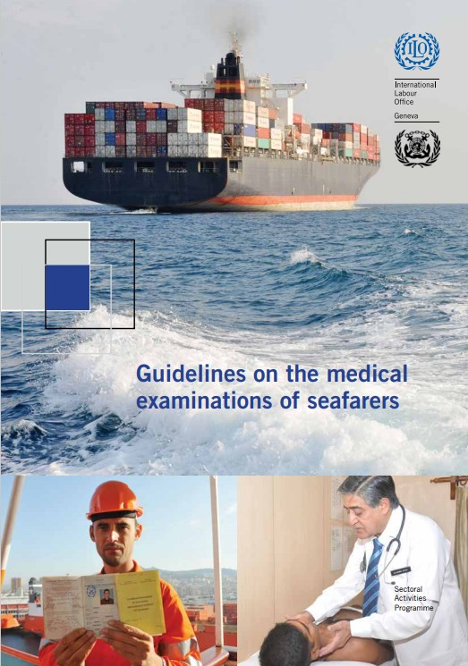
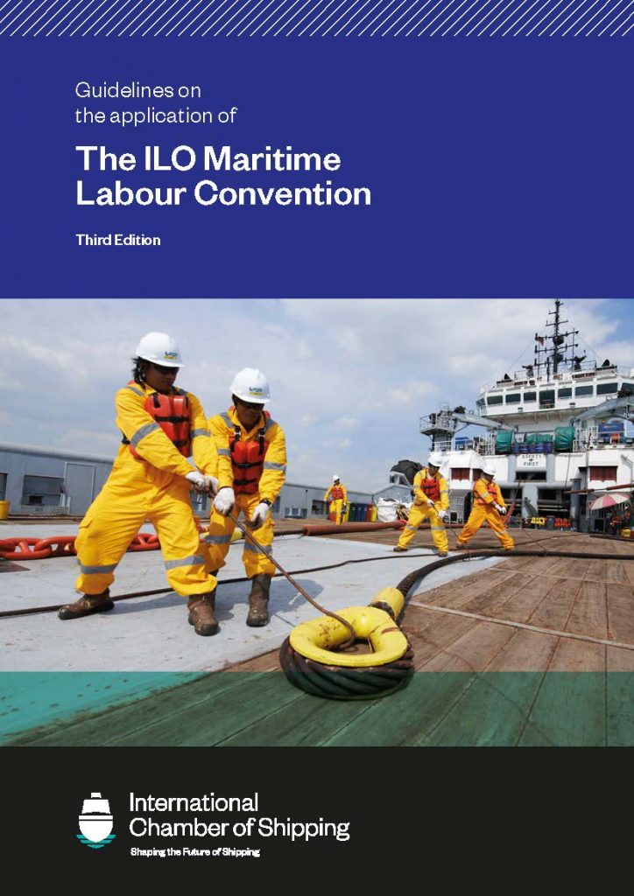
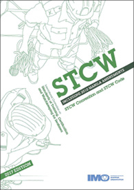
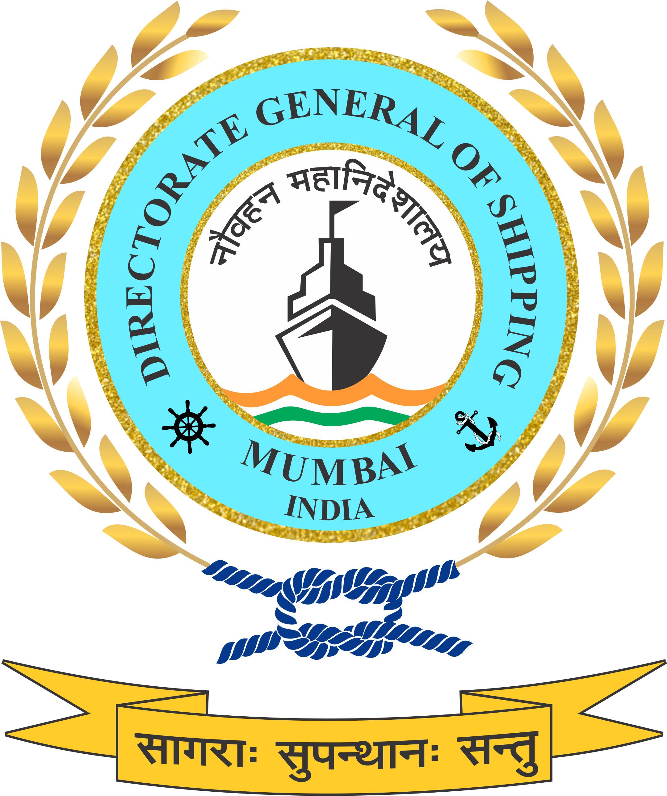
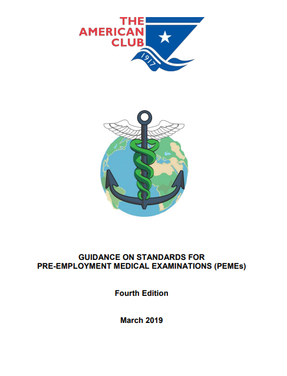

1. Core International Framework

This document forms the global reference framework used by maritime medical examiners when determining operational fitness for sea duty.
Download Official ILO / IMO Guidelines
The Maritime Labour Convention establishes the requirement for valid medical certification for seafarers and outlines minimum health standards applicable globally.
View MLC 2006 Information
The Standards of Training Certification and Watchkeeping Convention includes provisions related to medical fitness for watchkeeping duties and operational safety.
View STCW Overview2. Indian Regulatory Framework

DG Shipping regulates medical certification for Indian seafarers undergoing Pre-Employment Medical Examination (PEME) and Re-Medical Examination (REME).
Visit DG Shipping Website3. Flag State & Operational Variability

Protection & Indemnity Clubs monitor repatriation risk and medical claims. Their PEME guidance assists shipowners in managing medical risk exposure.
American Club PEME GuidanceReview Your Eligibility Before Booking PEME